WORKFLOW ORCHESTRATION WITH
AWS STEP FUNCTIONS
In the Part 6 - Workflow Orchestration with AwS Step Functions - of this training you will be implement similar orchestration as the one you did during the Part 4 - Orchestration & Data Analysis -.
This time, as soon as a file land in the Amazon S3 Bucket a write event gets recorded in the etl-ttt-demo-trail Cloud Trail that you explored earlier in Part 4.
Note that this Trail monitors write events for two paths in the etl-ttt-demo-${AWS_ACCOUNT_ID}-${AWS_REGION} Bucket, as you can see in the following picture:

For this lab, you are interested in the /etl-ttt-demo/data_analytics_team_folder/ path which simulates a shared repository where the Data Analytics team uploads their files for further Preparation & Analysis.
Furthermore, as previously explained, at every upload to this folder a write event gets generated. You will then create a new EventBridge Rule to listen to those events and automatically trigger a Step Function's State Machine Workfow that you will also create as part of this lab's steps.
1. Creating the Step Function Workflow¶
Before creating the Step Function Workflow, let's first create one more Crawler. This cralwer is actualy part of the Step Function Workflow you are going to build and it is required!
Final Crawler¶
Run the following code on your Cloud9 Enviroment Terminal to create the ml-final-crawler:
aws glue create-crawler \
--name ml-final-crawler \
--role AWSGlueServiceRole-etl-ttt-demo \
--database-name glue_ttt_demo_db \
--table-prefix ml_final_\
--targets "{\"S3Targets\": [{\"Path\": \"s3://${BUCKET_NAME}/etl-ttt-demo/output/data_analytics_team_folder/top-customers/\"}]}"
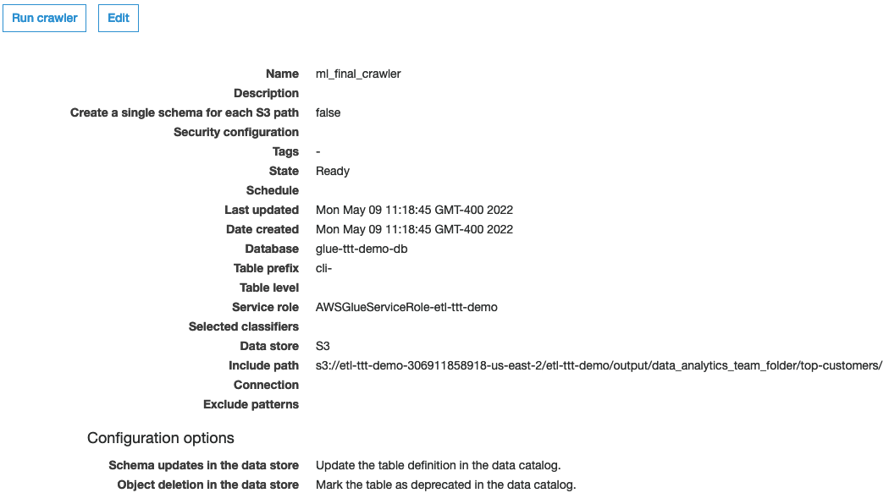
As you can see, the ml-final-crawler will crawl the shared Analytics Team Folder once the files land there.
Step Function Workflow¶
Now, let's finally create the Step Function Workflow.
For this, go to the AWS Step Function console (switch to your right region if needed!) and click on State machines, under Step Functions label on the far left menu of the AWS Step Function Console. Then, click on Create state machine.
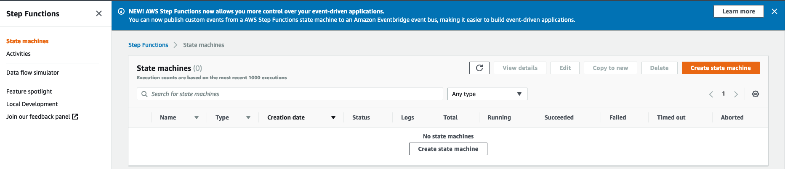
On the Choose authoring method, select Write your workflow in code and under Type choose Standard.
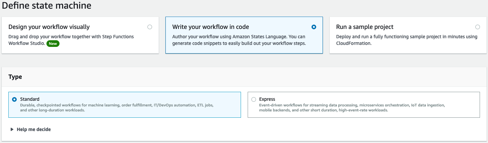
At the bottom of the same page, under Definition paste the following code:
{
"Comment": "A description of my state machine",
"StartAt": "Find Match Job",
"States": {
"Find Match Job": {
"Type": "Task",
"Resource": "arn:aws:states:::glue:startJobRun.sync",
"Parameters": {
"JobName": "ml-lab-notebook-job"
},
"Comment": "To remove duplicates in the full customer dataset using FIndMatches ML Transform and output the results in another output bucket",
"Next": "Crawl Dedup Data"
},
"Crawl Dedup Data": {
"Type": "Task",
"End": true,
"Parameters": {
"Name": "ml-final-crawler"
},
"Resource": "arn:aws:states:::aws-sdk:glue:startCrawler",
"Comment": "To crawl the data after FindMatches dedup higiene process"
}
}
}
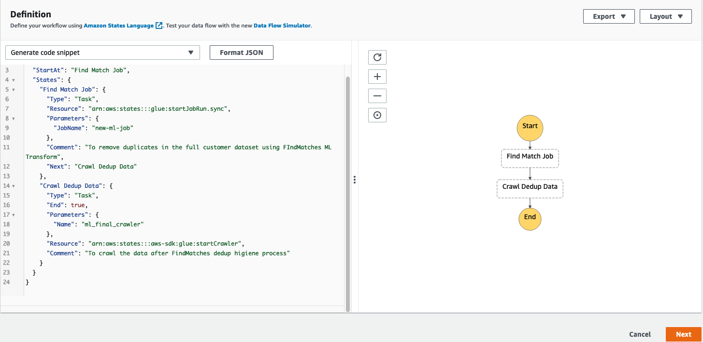
You should see the Step Function Workflow Studio Canvans getting updated with the graphical flow of the steps you set with the code.
Click Next and, on the Specity details page, do the following:
- Under Name give your State Machine Name the name of
findmatches-ML-dedup-workflow. - Under Permissions, select the Choose an existing role option and set the IAM Role to AWSStepFunctionRole-etl-ttt-demo.
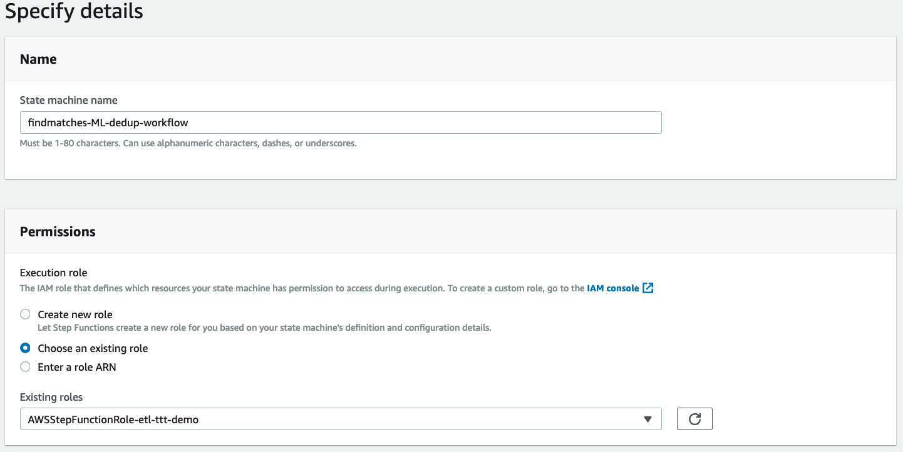
Scroll further down and click on the Create state machine button to create the Step Function State Machine Workflow.
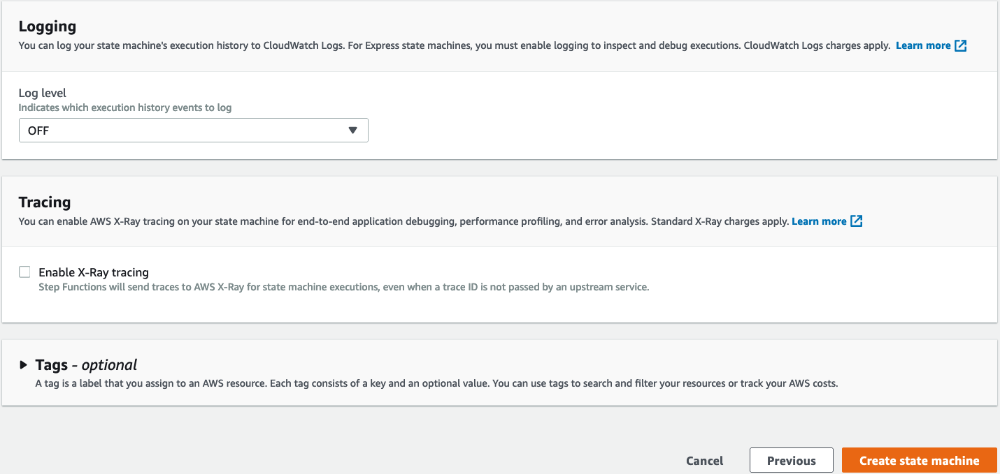
2. Creating an EventBridge Rule & Target for the Step Function Workflow (via CLI)¶
Now, to be able to trigger the Step Function Workflow, you also need to create a new EventBridge Rule & Target. Run the following steps in your Cloud9 Enviroment Terminal in sequence:
- First the Event Rule:
aws events put-rule \
--name "find-matches-rule" \
--event-pattern "{ \
\"source\": [\"aws.s3\"], \
\"detail-type\": [\"AWS API Call via CloudTrail\"], \
\"detail\": { \
\"eventSource\": [\"s3.amazonaws.com\"], \
\"eventName\": [\"PutObject\"], \
\"requestParameters\": { \
\"bucketName\": [\"${BUCKET_NAME}\"], \
\"key\": [{\"prefix\": \"etl-ttt-demo/data_analytics_team_folder/\"}]
} \
} \
}"
- Then the Event Target:
aws events put-targets \
--rule find-matches-rule \
--targets "Id"="findmatches-ML-dedup-workflow","Arn"="arn:aws:states:${AWS_REGION}:${AWS_ACCOUNT_ID}:stateMachine:findmatches-ML-dedup-workflow","RoleArn"="arn:aws:iam::${AWS_ACCOUNT_ID}:role/AWSEventBridgeInvokeRole-etl-ttt-demo" \
--region ${AWS_REGION}
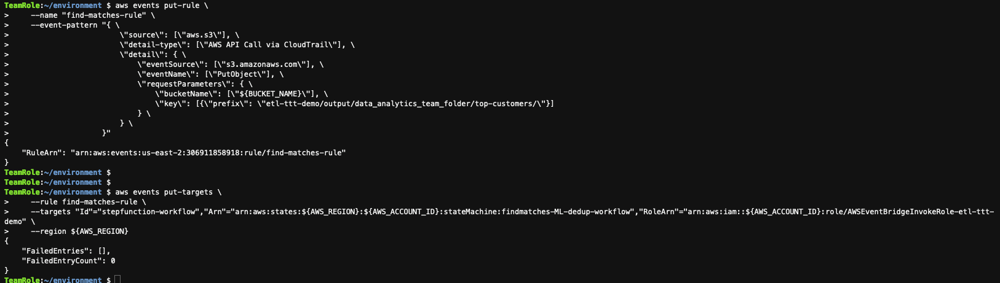
After running both commands, go to AWS EventBridge console. (switch to your right region if needed!).
On the left side menu, click on Rules, then click on top of the rule find-matches-rule to open its details. You should see under the Event Pattern tab the following:
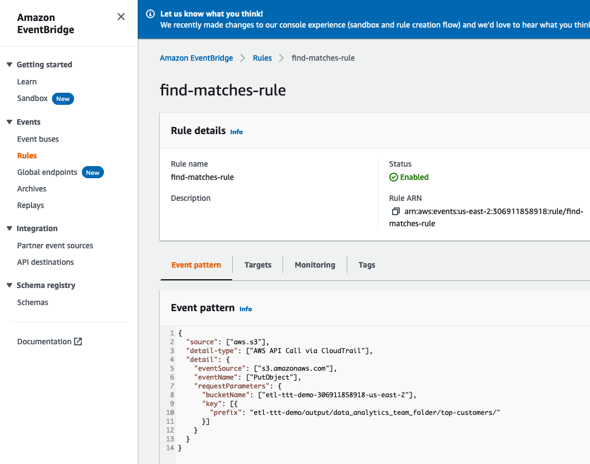
This pattern is basically saying that this EventRule is watching for every PutObject event that occur in the bucket/prefix specified in there.
Click on the Targets tab. Here, you can see that the Target Name points to the Step Functions Workflow you just created findmatches-ML-dedup-workflow. Also that it has a EventBridge Role, with all the required permissions, associated with it. This Role has also been created as part of the CloudFormation template.
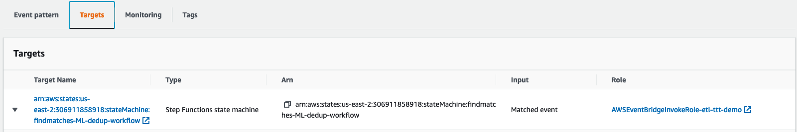
You are done creating the resources required for this Orchestration to work. Now, you need to simulate files being upladed into the central shared bucket repository of the Data Analytics Team, that means, the etl-ttt-demo/output/data_analytics_team_folder/top-customers/.
To do that, go back to your Cloud9 Enviroment Terminal and run the following S3 command to upload a file that contains duplicated data into the Data Analytics Team's shared folder:
aws s3 cp /tmp/dsd/csv_tables/ml-lab/ml-customer-full/full-top-customer.csv s3://$BUCKET_NAME/etl-ttt-demo/data_analytics_team_folder/
Once the above file is uploaded, it will then trigger the Step Function Workflow that you created which, consequently, will run the ml-lab-notebook-job that contains the FindMatches Transform and all the necessary code you wrote to transform the source duplicated data into a deduplicated version of the full top customers dataset that the fictitious Data Analytics Team will use in order to proceed with their Data Preparation work.
Following the flow¶
You can follow the flow by going first to the Step Function Workflow page and looking your findmatches-ML-dedup-workflow workflow. There, under Executions, you can click on the one that Status column says Running and click on View Details. You should see the graphical workflow changing its states.
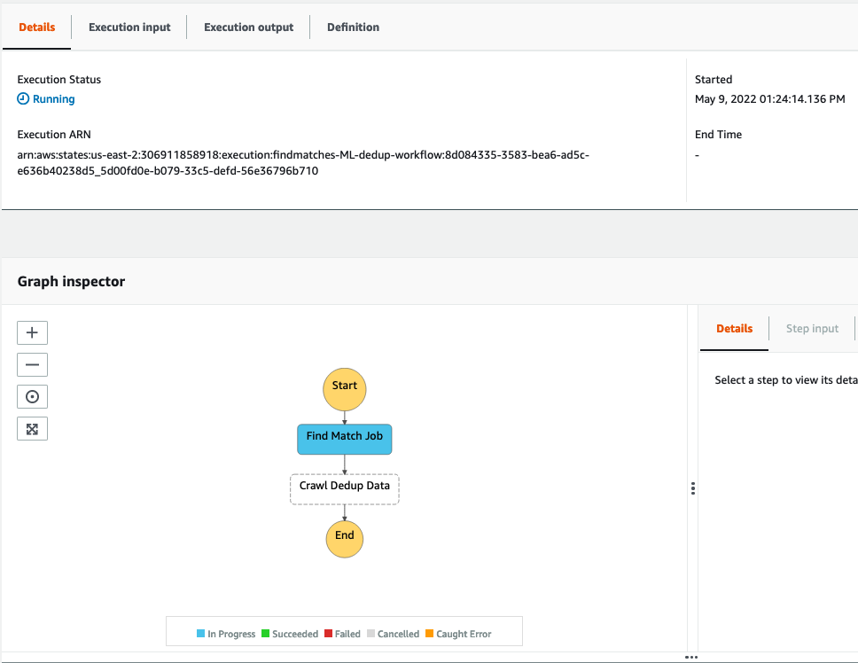
From there, go to your Glue Studio Console (switch to your right region if needed!) and look for your job ml-lab-notebook-job under the Monitoring page. Then, click on the big blue number under Running to scroll to the running Jobs, and confirm that your job is running.
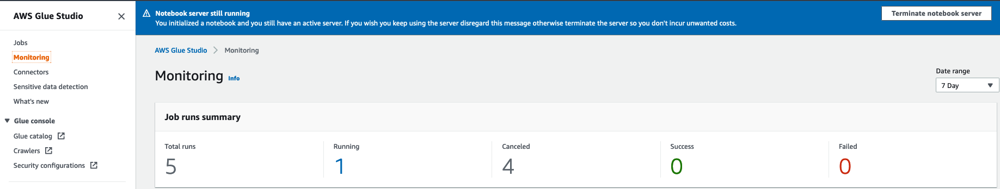
Finally, go to the Glue Console (switch to your right region if needed!) and look for two things:
- The FindMatches ML Transform: This should take about 6-7 minutes to complete:
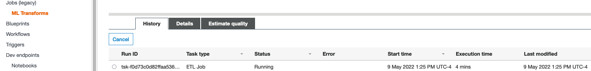
- The ml_final_crawler: This will start as soon as your ml-lab-notebook-job succeed and it will create 1 new table:
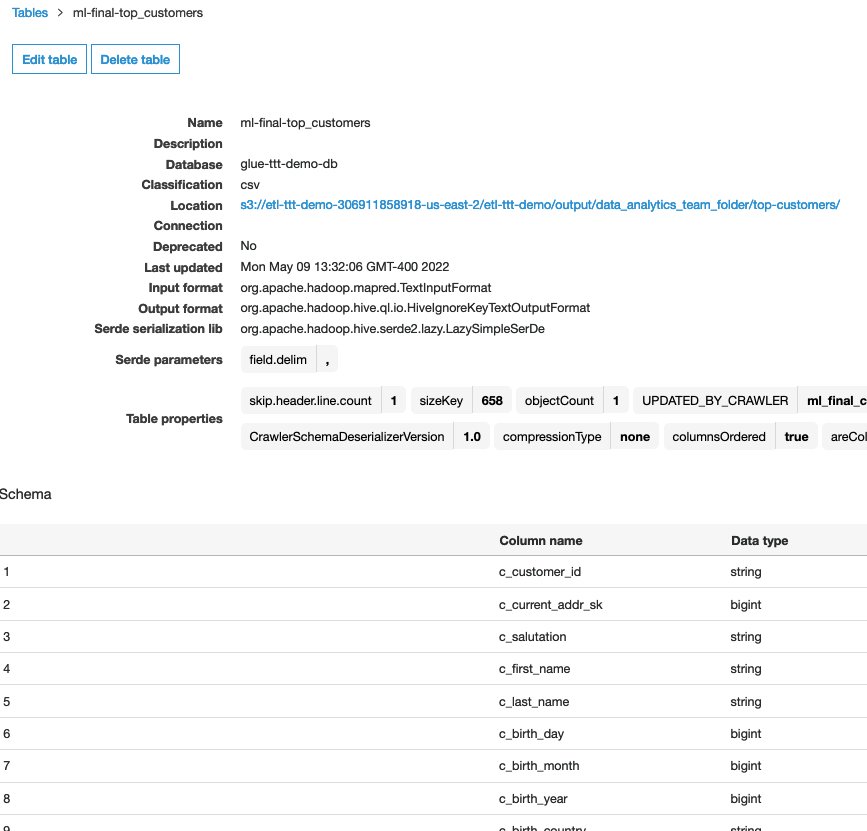
Once the Crawler finishes, it will create the new table based on the deduplicated version of the full top customers dataset. This deuplicated version will then be served as the source dataset for the fictitious Data Analytics Team to work with it the AWS Glue Databrew.
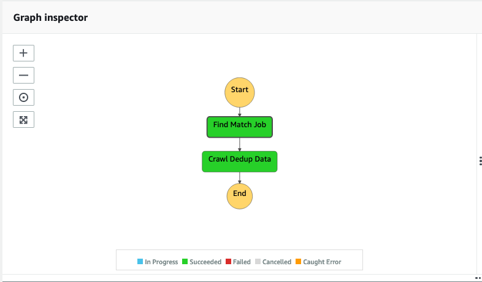
Once you are ready move to the Part 7 - Data Quality & Data Preparation with AWS Glue DataBrew.